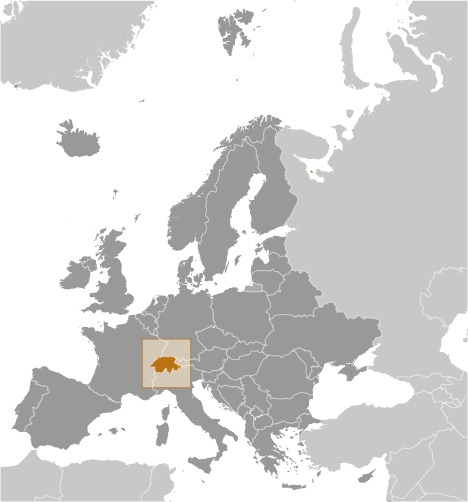
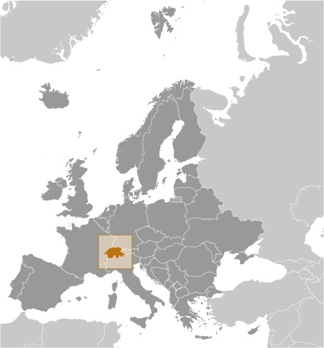

-
Introduction :: Switzerland
-
Background:
The Swiss Confederation was founded in 1291 as a defensive alliance among three cantons. In succeeding years, other localities joined the original three. The Swiss Confederation secured its independence from the Holy Roman Empire in 1499. A constitution of 1848, subsequently modified in 1874 to allow voters to introduce referenda on proposed laws, replaced the confederation with a centralized federal government. Switzerland's sovereignty and neutrality have long been honored by the major European powers, and the country was not involved in either of the two world wars. The political and economic integration of Europe over the past half century, as well as Switzerland's role in many UN and international organizations, has strengthened Switzerland's ties with its neighbors. However, the country did not officially become a UN member until 2002. Switzerland remains active in many UN and international organizations but retains a strong commitment to neutrality.
-
Geography :: Switzerland
-
Location:Central Europe, east of France, north of ItalyGeographic coordinates:47 00 N, 8 00 EMap references:EuropeArea:total: 41,277 sq kmland: 39,997 sq kmwater: 1,280 sq kmcountry comparison to the world: 135Area - comparative:slightly less than twice the size of New JerseyArea comparison map:
 The World Factbook Field Image ModalEurope :: Switzerland Print
The World Factbook Field Image ModalEurope :: Switzerland Print Image Description
Image Descriptionslightly less than twice the size of New Jersey
Land boundaries:total: 1,770 kmborder countries (5): Austria 158 km, France 525 km, Italy 698 km, Liechtenstein 41 km, Germany 348 kmCoastline:0 km (landlocked)Maritime claims:none (landlocked)Climate:temperate, but varies with altitude; cold, cloudy, rainy/snowy winters; cool to warm, cloudy, humid summers with occasional showersTerrain:mostly mountains (Alps in south, Jura in northwest) with a central plateau of rolling hills, plains, and large lakesElevation:mean elevation: 1,350 mlowest point: Lake Maggiore 195 mhighest point: Dufourspitze 4,634 mNatural resources:hydropower potential, timber, saltLand use:agricultural land: 38.7% (2011 est.)arable land: 10.2% (2011 est.) / permanent crops: 0.6% (2011 est.) / permanent pasture: 27.9% (2011 est.)forest: 31.5% (2011 est.)other: 29.8% (2011 est.)Irrigated land:630 sq km (2012)Population distribution:population distribution corresponds to elevation with the northern and western areas far more heavily populated; the higher Alps of the south limit settlementNatural hazards:avalanches, landslides; flash floodsEnvironment - current issues:air pollution from vehicle emissions; water pollution from agricultural fertilizers; chemical contaminants and erosion damage the soil and limit productivity; loss of biodiversityEnvironment - international agreements:party to: Air Pollution, Air Pollution-Nitrogen Oxides, Air Pollution-Persistent Organic Pollutants, Air Pollution-Sulfur 85, Air Pollution-Sulfur 94, Air Pollution-Volatile Organic Compounds, Antarctic Treaty, Biodiversity, Climate Change, Climate Change-Kyoto Protocol, Desertification, Endangered Species, Environmental Modification, Hazardous Wastes, Marine Dumping, Marine Life Conservation, Ozone Layer Protection, Ship Pollution, Tropical Timber 83, Tropical Timber 94, Wetlands, Whalingsigned, but not ratified: Law of the SeaGeography - note:landlocked; crossroads of northern and southern Europe; along with southeastern France, northern Italy, and southwestern Austria, has the highest elevations in the Alps -
People and Society :: Switzerland
-
Population:8,403,994 (July 2020 est.)country comparison to the world: 100Nationality:noun: Swiss (singular and plural)adjective: SwissEthnic groups:Swiss 69.5%, German 4.2%, Italian 3.2%, Portuguese 2.6%, French 2%, Kosovo 1.1%, other 17.3%, unspecified .1% (2018 est.)note: data represent permanent and non-permanent resident population by country of birthLanguages:German (or Swiss German) (official) 62.6%, French (official) 22.9%, Italian (official) 8.2%, English 5.4%, Portuguese 3.7%, Albanian 3.2%, Serbo-Croatian 2.5%, Spanish 2.4%, Romansh (official) 0.5%, other 7.7% (2017 est.)
note: German, French, Italian, and Romansh are all national and official languages; shares sum to more than 100% because some respondents gave more than one answer
Religions:Roman Catholic 35.9%, Protestant 23.8%, other Christian 5.9%, Muslim 5.4%, Jewish 0.3%, other 1.4%, none 26%, unspecified 1.4% (2017 est.)Age structure:0-14 years: 15.34% (male 664,255/female 625,252)15-24 years: 10.39% (male 446,196/female 426,708)25-54 years: 42.05% (male 1,768,245/female 1,765,941)55-64 years: 13.48% (male 569,717/female 563,482)65 years and over: 18.73% (male 699,750/female 874,448) (2020 est.)population pyramid: The World Factbook Field Image ModalEurope :: Switzerland Print
The World Factbook Field Image ModalEurope :: Switzerland Print Image DescriptionThis is the population pyramid for Switzerland. A population pyramid illustrates the age and sex structure of a country's population and may provide insights about political and social stability, as well as economic development. The population is distributed along the horizontal axis, with males shown on the left and females on the right. The male and female populations are broken down into 5-year age groups represented as horizontal bars along the vertical axis, with the youngest age groups at the bottom and the oldest at the top. The shape of the population pyramid gradually evolves over time based on fertility, mortality, and international migration trends.
Image DescriptionThis is the population pyramid for Switzerland. A population pyramid illustrates the age and sex structure of a country's population and may provide insights about political and social stability, as well as economic development. The population is distributed along the horizontal axis, with males shown on the left and females on the right. The male and female populations are broken down into 5-year age groups represented as horizontal bars along the vertical axis, with the youngest age groups at the bottom and the oldest at the top. The shape of the population pyramid gradually evolves over time based on fertility, mortality, and international migration trends.
For additional information, please see the entry for Population pyramid on the Definitions and Notes page under the References tab.Dependency ratios:total dependency ratio: 51.6youth dependency ratio: 22.7elderly dependency ratio: 29potential support ratio: 3.5 (2020 est.)Median age:total: 42.7 yearsmale: 41.7 yearsfemale: 43.7 years (2020 est.)country comparison to the world: 33Population growth rate:0.66% (2020 est.)country comparison to the world: 144Birth rate:10.5 births/1,000 population (2020 est.)country comparison to the world: 186Death rate:8.5 deaths/1,000 population (2020 est.)country comparison to the world: 73Net migration rate:4.6 migrant(s)/1,000 population (2020 est.)country comparison to the world: 27Population distribution:population distribution corresponds to elevation with the northern and western areas far more heavily populated; the higher Alps of the south limit settlementUrbanization:urban population: 73.9% of total population (2020)rate of urbanization: 0.88% annual rate of change (2015-20 est.)total population growth rate v. urban population growth rate, 2000-2030: PDFMajor urban areas - population:1.395 million Zurich, 430,000 BERN (capital) (2020)Sex ratio:at birth: 1.06 male(s)/female0-14 years: 1.06 male(s)/female15-24 years: 1.05 male(s)/female25-54 years: 1 male(s)/female55-64 years: 1.01 male(s)/female65 years and over: 0.8 male(s)/femaletotal population: 0.98 male(s)/female (2020 est.)Mother's mean age at first birth:30.7 years (2017 est.)Maternal mortality rate:5 deaths/100,000 live births (2017 est.)country comparison to the world: 171Infant mortality rate:total: 3.5 deaths/1,000 live birthsmale: 3.8 deaths/1,000 live birthsfemale: 3.2 deaths/1,000 live births (2020 est.)country comparison to the world: 200Life expectancy at birth:total population: 82.8 yearsmale: 80.5 yearsfemale: 85.3 years (2020 est.)country comparison to the world: 13Total fertility rate:1.57 children born/woman (2020 est.)country comparison to the world: 192Contraceptive prevalence rate:71.6% (2017)Drinking water source:improved: urban: 100% of populationrural: 100% of populationtotal: 100% of populationunimproved: urban: 0% of populationrural: 0% of populationtotal: 0% of population (2017 est.)Current Health Expenditure:12.3% (2017)Physicians density:4.3 physicians/1,000 population (2017)Hospital bed density:4.7 beds/1,000 population (2017)Sanitation facility access:improved: urban: 100% of populationrural: 100% of populationtotal: 100% of populationunimproved: urban: 0% of populationrural: 0% of populationtotal: 0% of population (2017 est.)HIV/AIDS - adult prevalence rate:0.2% (2019)country comparison to the world: 112HIV/AIDS - people living with HIV/AIDS:17,000 (2019)country comparison to the world: 88HIV/AIDS - deaths:<100 (2019)Obesity - adult prevalence rate:19.5% (2016)country comparison to the world: 112Education expenditures:5.1% of GDP (2017)country comparison to the world: 57School life expectancy (primary to tertiary education):total: 16 yearsmale: 17 yearsfemale: 16 years (2018)Unemployment, youth ages 15-24:total: 7.9%male: 8.4%female: 7.5% (2018 est.)country comparison to the world: 144 -
Government :: Switzerland
-
Country name:conventional long form: Swiss Confederationconventional short form: Switzerlandlocal long form: Schweizerische Eidgenossenschaft (German); Confederation Suisse (French); Confederazione Svizzera (Italian); Confederaziun Svizra (Romansh)local short form: Schweiz (German); Suisse (French); Svizzera (Italian); Svizra (Romansh)abbreviation: CHetymology: name derives from the canton of Schwyz, one of the founding cantons of the Old Swiss Confederacy that formed in the 14th centuryGovernment type:federal republic (formally a confederation)Capital:name: Berngeographic coordinates: 46 55 N, 7 28 Etime difference: UTC+1 (6 hours ahead of Washington, DC, during Standard Time)daylight saving time: +1hr, begins last Sunday in March; ends last Sunday in Octoberetymology: origin of the name is uncertain, but may derive from a 2nd century B.C. Celtic place name, possibly "berna" meaning "cleft," that was subsequently adopted by a Roman settlementAdministrative divisions:26 cantons (cantons, singular - canton in French; cantoni, singular - cantone in Italian; Kantone, singular - Kanton in German); Aargau, Appenzell Ausserrhoden, Appenzell Innerrhoden, Basel-Landschaft, Basel-Stadt, Berne/Bern, Fribourg/Freiburg, Geneve (Geneva), Glarus, Graubuenden/Grigioni/Grischun, Jura, Luzern, Neuchatel, Nidwalden, Obwalden, Sankt Gallen, Schaffhausen, Schwyz, Solothurn, Thurgau, Ticino, Uri, Valais/Wallis, Vaud, Zug, Zuerich
note: 6 of the cantons - Appenzell Ausserrhoden, Appenzell Innerrhoden, Basel-Landschaft, Basel-Stadt, Nidwalden, Obwalden - are referred to as half cantons because they elect only one member (instead of two) to the Council of States and, in popular referendums where a majority of popular votes and a majority of cantonal votes are required, these 6 cantons only have a half vote
Independence:1 August 1291 (founding of the Swiss Confederation)National holiday:Founding of the Swiss Confederation in 1291; note - since 1 August 1891 celebrated as Swiss National DayConstitution:history: previous 1848, 1874; latest adopted by referendum 18 April 1999, effective 1 January 2000amendments: proposed by the two houses of the Federal Assembly or by petition of at least one hundred thousand voters (called the "federal popular initiative"); passage of proposals requires majority vote in a referendum; following drafting of an amendment by the Assembly, its passage requires approval by majority vote in a referendum and approval by the majority of cantons; amended many times, last in 2018 (2020)Legal system:civil law system; judicial review of legislative acts, except for federal decrees of a general obligatory characterInternational law organization participation:accepts compulsory ICJ jurisdiction with reservations; accepts ICCt jurisdictionCitizenship:citizenship by birth: nocitizenship by descent only: at least one parent must be a citizen of Switzerlanddual citizenship recognized: yesresidency requirement for naturalization: 12 years including at least 3 of the last 5 years prior to applicationSuffrage:18 years of age; universalExecutive branch:chief of state: President of the Swiss Confederation Simonetta SOMMARUGA (since 1 January 2020; Vice President Guy PARMELIN (since 1 January 2020); note - the Federal Council, which is comprised of 7 federal councillors, constitutes the federal government of Switzerland; council members rotate the 1-year term of federal president (chief of state and head of government)head of government: President of the Swiss Confederation Simonetta SOMMARUGA (since 1 January 2020; Vice President Guy PARMELIN (since 1 January 2020)cabinet: Federal Council or Bundesrat (in German), Conseil Federal (in French), Consiglio Federale (in Italian) indirectly elected by the Federal Assembly for a 4-year termelections/appointments: president and vice president elected by the Federal Assembly from among members of the Federal Council for a 1-year, non-consecutive term; election last held on 11 December 2019 (next to be held in December 2020)election results: Simonetta SOMMARUGA elected president; Federal Assembly vote - 192 of 205; Guy PARMELIN elected vice president; Federal Assembly vote - 191 of 204Legislative branch:description: description: bicameral Federal Assembly or Bundesversammlung (in German), Assemblée Fédérale (in French), Assemblea Federale (in Italian) consists of:
Council of States or Ständerat (in German), Conseil des États (in French), Consiglio degli Stati (in Italian) (46 seats; members in multi-seat constituencies representing cantons and single-seat constituencies representing half cantons directly elected by simple majority vote except Jura and Neuchatel cantons which use proportional representation vote; member term governed by cantonal law)
National Council or Nationalrat (in German), Conseil National (in French), Consiglio Nazionale (in Italian) (200 seats; 195 members in cantons directly elected by proportional representation vote and 6 in half cantons directly elected by simple majority vote; members serve 4-year terms) (e.g. 2019)elections:
Council of States - last held in most cantons on 20 October 2019 (each canton determines when the next election will be held)
National Council - last held on 20 October 2019 (next to be held in 2023) (e.g. 2019)election results:
Council of States - percent of vote by party - NA; seats by party - CVP 13, FDP 12, SDP 9, Green Party 5, other 1; composition - NA
National Council - percent of vote by party - SVP 25.6%, SP 16.8%, FDP 15.1%, Green Party 13.2%, CVP 11.4%, GLP 7.8%, other 10.1%; seats by party - SVP 53, SP 39, FDP 29, Green Party 28, CVP 25, GLP 16, other 10; composition - men 116, women 84, percent of women 42% (e.g. 2019)Judicial branch:highest courts: Federal Supreme Court (consists of 38 justices and 19 deputy justices organized into 7 divisions)judge selection and term of office: judges elected by the Federal Assembly for 6-year terms; note - judges are affiliated with political parties and are elected according to linguistic and regional criteria in approximate proportion to the level of party representation in the Federal Assemblysubordinate courts: Federal Criminal Court (established in 2004); Federal Administrative Court (established in 2007); note - each of Switzerland's 26 cantons has its own courtsPolitical parties and leaders:Christian Democratic People's Party (Christlichdemokratische Volkspartei der Schweiz or CVP, Parti Democrate-Chretien Suisse or PDC, Partito Popolare Democratico Svizzero or PPD, Partida Cristiandemocratica dalla Svizra or PCD) [Gerhard PFISTER]
Conservative Democratic Party (Buergerlich-Demokratische Partei Schweiz or BDP, Parti Bourgeois Democratique Suisse or PBD, Partito Borghese Democratico Svizzero or PBD, Partido burgais democratica Svizera or PBD) [Martin LANDOLT]
Free Democratic Party or FDP.The Liberals (FDP.Die Liberalen, PLR.Les Liberaux-Radicaux, PLR.I Liberali, Ils Liberals) [Petra GOESSI]
Green Liberal Party (Gruenliberale Partei or GLP, Parti vert liberale or PVL, Partito Verde-Liberale or PVL, Partida Verde Liberale or PVL) [Juerg GROSSEN]
Green Party (Gruene Partei der Schweiz or Gruene, Parti Ecologiste Suisse or Les Verts, Partito Ecologista Svizzero or I Verdi, Partida Ecologica Svizra or La Verda) [Regula RYTZ]
Social Democratic Party (Sozialdemokratische Partei der Schweiz or SP, Parti Socialiste Suisse or PSS, Partito Socialista Svizzero or PSS, Partida Socialdemocratica de la Svizra or PSS) [Christian LEVRAT]
Swiss People's Party (Schweizerische Volkspartei or SVP, Union Democratique du Centre or UDC, Unione Democratica di Centro or UDC, Uniun Democratica dal Center or UDC) [Albert ROESTI]
other minor partiesInternational organization participation:ADB (nonregional member), AfDB (nonregional member), Australia Group, BIS, CD, CE, CERN, EAPC, EBRD, EFTA, EITI (implementing country), ESA, FAO, FATF, G-10, IADB, IAEA, IBRD, ICAO, ICC (national committees), ICCt, ICRM, IDA, IEA, IFAD, IFC, IFRCS, IGAD (partners), ILO, IMF, IMO, IMSO, Interpol, IOC, IOM, IPU, ISO, ITSO, ITU, ITUC (NGOs), LAIA (observer), MIGA, MINUSMA, MONUSCO, NEA, NSG, OAS (observer), OECD, OIF, OPCW, OSCE, Pacific Alliance (observer), Paris Club, PCA, PFP, Schengen Convention, UN, UNCTAD, UNESCO, UNHCR, UNIDO, UNITAR, UNMISS, UNMOGIP, UNRWA, UNTSO, UNWTO, UPU, WCO, WHO, WIPO, WMO, WTO, ZCDiplomatic representation in the US:chief of mission: Ambassador Jacques PITTELOUD (since 16 September 2019)chancery: 2900 Cathedral Avenue NW, Washington, DC 20008telephone: [1] (202) 745-7900FAX: [1] (202) 387-2564consulate(s) general: Atlanta, Chicago, Los Angeles, New York, San FranciscoDiplomatic representation from the US:chief of mission: Ambassador Edward "Ed" MCMULLEN, Jr. (since 21 November 2017) note - also accredited to Liechtensteintelephone: [41] (031) 357-70-11embassy: Sulgeneckstrasse 19, CH-3007 Bernmailing address: use embassy street addressFAX: [41] (031) 357-73-20Flag description:red square with a bold, equilateral white cross in the center that does not extend to the edges of the flag; various medieval legends purport to describe the origin of the flag; a white cross used as identification for troops of the Swiss Confederation is first attested at the Battle of Laupen (1339)National symbol(s):Swiss cross (white cross on red field, arms equal length); national colors: red, whiteNational anthem:Leonhard WIDMER [German], Charles CHATELANAT [French], Camillo VALSANGIACOMO [Italian], and Flurin CAMATHIAS [Romansch]/Alberik ZWYSSIGthe Swiss anthem has four names: "Schweizerpsalm" [German] "Cantique Suisse" [French] "Salmo svizzero," [Italian] "Psalm svizzer" [Romansch] (Swiss Psalm)note: unofficially adopted 1961, officially 1981; the anthem has been popular in a number of Swiss cantons since its composition (in German) in 1841; translated into the other three official languages of the country (French, Italian, and Romansch), it is official in each of those languages
-
Economy :: Switzerland
-
Economic overview:
Switzerland, a country that espouses neutrality, is a prosperous and modern market economy with low unemployment, a highly skilled labor force, and a per capita GDP among the highest in the world. Switzerland's economy benefits from a highly developed service sector, led by financial services, and a manufacturing industry that specializes in high-technology, knowledge-based production. Its economic and political stability, transparent legal system, exceptional infrastructure, efficient capital markets, and low corporate tax rates also make Switzerland one of the world's most competitive economies.
The Swiss have brought their economic practices largely into conformity with the EU's to gain access to the Union’s Single Market and enhance the country’s international competitiveness. Some trade protectionism remains, however, particularly for its small agricultural sector. The fate of the Swiss economy is tightly linked to that of its neighbors in the euro zone, which purchases half of Swiss exports. The global financial crisis of 2008 and resulting economic downturn in 2009 stalled demand for Swiss exports and put Switzerland into a recession. During this period, the Swiss National Bank (SNB) implemented a zero-interest rate policy to boost the economy, as well as to prevent appreciation of the franc, and Switzerland's economy began to recover in 2010.
The sovereign debt crises unfolding in neighboring euro-zone countries, however, coupled with economic instability in Russia and other Eastern European economies drove up demand for the Swiss franc by investors seeking a safehaven currency. In January 2015, the SNB abandoned the Swiss franc’s peg to the euro, roiling global currency markets and making active SNB intervention a necessary hallmark of present-day Swiss monetary policy. The independent SNB has upheld its zero interest rate policy and conducted major market interventions to prevent further appreciation of the Swiss franc, but parliamentarians have urged it to do more to weaken the currency. The franc's strength has made Swiss exports less competitive and weakened the country's growth outlook; GDP growth fell below 2% per year from 2011 through 2017.
In recent years, Switzerland has responded to increasing pressure from neighboring countries and trading partners to reform its banking secrecy laws, by agreeing to conform to OECD regulations on administrative assistance in tax matters, including tax evasion. The Swiss Government has also renegotiated its double taxation agreements with numerous countries, including the US, to incorporate OECD standards.
GDP real growth rate:1.11% (2019 est.)3.04% (2018 est.)1.65% (2017 est.)country comparison to the world: 170Inflation rate (consumer prices):0.3% (2019 est.)0.9% (2018 est.)0.5% (2017 est.)country comparison to the world: 38Credit ratings:Fitch rating: AAA (2000)Moody's rating: Aaa (1982)Standard & Poors rating: AAA (1988)GDP (purchasing power parity) - real:$498.207 billion (2019 est.)$492.719 billion (2018 est.)$478.198 billion (2017 est.)note: data are in 2010 dollars
GDP (official exchange rate):$731.502 billion (2019 est.)GDP - per capita (PPP):$81,475 (2019 est.)$81,199 (2018 est.)$79,457 (2017 est.)note: data are in 2010 dollars
country comparison to the world: 8Gross national saving:33.8% of GDP (2017 est.)32.3% of GDP (2016 est.)33.9% of GDP (2015 est.)country comparison to the world: 21GDP - composition, by sector of origin:agriculture: 0.7% (2017 est.)industry: 25.6% (2017 est.)services: 73.7% (2017 est.)GDP - composition, by end use:household consumption: 53.7% (2017 est.)government consumption: 12% (2017 est.)investment in fixed capital: 24.5% (2017 est.)investment in inventories: -1.4% (2017 est.)exports of goods and services: 65.1% (2017 est.)imports of goods and services: -54% (2017 est.)Ease of Doing Business Index scores:96.1 (2020)Agriculture - products:grains, fruits, vegetables; meat, eggs, dairy productsIndustries:machinery, chemicals, watches, textiles, precision instruments, tourism, banking, insurance, pharmaceuticalsIndustrial production growth rate:3.4% (2017 est.)country comparison to the world: 92Labor force:5.067 million (2020 est.)country comparison to the world: 76Labor force - by occupation:agriculture: 3.3%industry: 19.8%services: 76.9% (2015)Unemployment rate:2.31% (2019 est.)2.55% (2018 est.)country comparison to the world: 25Population below poverty line:6.6% (2014 est.)Budget:revenues: 242.1 billion (2017 est.)expenditures: 234.4 billion (2017 est.)note: includes federal, cantonal, and municipal budgets
Taxes and other revenues:35.7% (of GDP) (2017 est.)country comparison to the world: 60Budget surplus (+) or deficit (-):1.1% (of GDP) (2017 est.)country comparison to the world: 33Public debt:41.8% of GDP (2017 est.)41.8% of GDP (2016 est.)note: general government gross debt; gross debt consists of all liabilities that require payment or payments of interest and/or principal by the debtor to the creditor at a date or dates in the future; includes debt liabilities in the form of Special Drawing Rights (SDRs), currency and deposits, debt securities, loans, insurance, pensions and standardized guarantee schemes, and other accounts payable; all liabilities in the GFSM (Government Financial Systems Manual) 2001 system are debt, except for equity and investment fund shares and financial derivatives and employee stock options
country comparison to the world: 119Fiscal year:calendar yearCurrent account balance:$79.937 billion (2019 est.)$63.273 billion (2018 est.)country comparison to the world: 5Exports:$443.997 billion (2019 est.)$444.605 billion (2018 est.)$430.129 billion (2017 est.)note: trade data exclude trade with Switzerland
country comparison to the world: 19Exports - partners:Germany 15.2%, US 12.3%, China 8.2%, India 6.7%, France 5.7%, UK 5.7%, Hong Kong 5.4%, Italy 5.3% (2017)Exports - commodities:machinery, chemicals, metals, watches, agricultural productsImports:$344.477 billion (2019 est.)$344.557 billion (2018 est.)$343.367 billion (2017 est.)country comparison to the world: 21Imports - commodities:machinery, chemicals, vehicles, metals; agricultural products, textilesImports - partners:Germany 20.9%, US 7.9%, Italy 7.6%, UK 7.3%, France 6.8%, China 5% (2017)Reserves of foreign exchange and gold:$811.2 billion (31 December 2017 est.)$679.3 billion (31 December 2016 est.)country comparison to the world: 3Debt - external:$1.664 trillion (31 March 2016 est.)$1.663 trillion (31 March 2015 est.)country comparison to the world: 12Exchange rates:Swiss francs (CHF) per US dollar -0.88995 (2020 est.)0.98835 (2019 est.)0.99195 (2018 est.)0.9627 (2014 est.)0.9152 (2013 est.) -
Energy :: Switzerland
-
Electricity access:electrification - total population: 100% (2020)Electricity - production:59.01 billion kWh (2016 est.)country comparison to the world: 50Electricity - consumption:58.46 billion kWh (2016 est.)country comparison to the world: 43Electricity - exports:30.17 billion kWh (2016 est.)country comparison to the world: 5Electricity - imports:34.1 billion kWh (2016 est.)country comparison to the world: 4Electricity - installed generating capacity:20.84 million kW (2016 est.)country comparison to the world: 42Electricity - from fossil fuels:3% of total installed capacity (2016 est.)country comparison to the world: 208Electricity - from nuclear fuels:18% of total installed capacity (2017 est.)country comparison to the world: 11Electricity - from hydroelectric plants:67% of total installed capacity (2017 est.)country comparison to the world: 21Electricity - from other renewable sources:13% of total installed capacity (2017 est.)country comparison to the world: 71Crude oil - production:0 bbl/day (2018 est.)country comparison to the world: 205Crude oil - exports:0 bbl/day (2017 est.)country comparison to the world: 201Crude oil - imports:57,400 bbl/day (2017 est.)country comparison to the world: 54Crude oil - proved reserves:0 bbl (1 January 2018 est.)country comparison to the world: 201Refined petroleum products - production:61,550 bbl/day (2017 est.)country comparison to the world: 79Refined petroleum products - consumption:223,900 bbl/day (2017 est.)country comparison to the world: 54Refined petroleum products - exports:7,345 bbl/day (2017 est.)country comparison to the world: 88Refined petroleum products - imports:165,100 bbl/day (2017 est.)country comparison to the world: 39Natural gas - production:0 cu m (2017 est.)country comparison to the world: 205Natural gas - consumption:3.709 billion cu m (2017 est.)country comparison to the world: 68Natural gas - exports:0 cu m (2017 est.)country comparison to the world: 194Natural gas - imports:3.681 billion cu m (2017 est.)country comparison to the world: 42Natural gas - proved reserves:NA cu m (1 January 2011 est.)Carbon dioxide emissions from consumption of energy:38.95 million Mt (2017 est.)country comparison to the world: 66
-
Communications :: Switzerland
-
Telephones - fixed lines:total subscriptions: 3,012,224subscriptions per 100 inhabitants: 36.08 (2019 est.)country comparison to the world: 45Telephones - mobile cellular:total subscriptions: 10,618,759subscriptions per 100 inhabitants: 127.19 (2019 est.)country comparison to the world: 84Telecommunication systems:general assessment: highly developed telecommunications infrastructure with extensive domestic and international services; one of the highest broadband penetration rates in Europe; although not a member of the EU, Switzerland follows the EU's telecom framework, and regulations; expansive cable broadband network with effective cross-platform competition; despite the countries expansion of 5G services, and switching off 2G infrastructure, the Environmental Agency has raised concern regarding the 2,000 5G mobile antennas and asked the govt. to halt 5G transmissions, the developers of the 5G infrastructure are allowed to continue with future checks to be studied of the health implications of the radio frequency radiation; regulator auction of 5G spectrum (2020)domestic: ranked among leading countries for fixed-line teledensity and infrastructure; fixed-line 36 per 100 and mobile-cellular subscribership 127 per 100 persons; extensive cable and microwave radio relay networks (2019)international: country code - 41; satellite earth stations - 2 Intelsat (Atlantic Ocean and Indian Ocean)note: the COVID-19 outbreak is negatively impacting telecommunications production and supply chains globally; consumer spending on telecom devices and services has also slowed due to the pandemic's effect on economies worldwide; overall progress towards improvements in all facets of the telecom industry - mobile, fixed-line, broadband, submarine cable and satellite - has moderatedBroadcast media:
the publicly owned radio and TV broadcaster, Swiss Broadcasting Corporation (SRG/SSR), operates 8 national TV networks, 3 broadcasting in German, 3 in French, and 2 in Italian; private commercial TV stations broadcast regionally and locally; TV broadcasts from stations in Germany, Italy, and France are widely available via multi-channel cable and satellite TV services; SRG/SSR operates 17 radio stations that, along with private broadcasters, provide national to local coverage )
(2019)Internet country code:.chInternet users:total: 7,437,820percent of population: 89.69% (July 2018 est.)country comparison to the world: 69Broadband - fixed subscriptions:total: 3,957,669subscriptions per 100 inhabitants: 48 (2018 est.)country comparison to the world: 36 -
Transportation :: Switzerland
-
National air transport system:number of registered air carriers: 6 (2020)inventory of registered aircraft operated by air carriers: 179annual passenger traffic on registered air carriers: 28,857,994 (2018)annual freight traffic on registered air carriers: 1,841,310,000 mt-km (2018)Civil aircraft registration country code prefix:HB (2016)Airports:63 (2013)country comparison to the world: 78Airports - with paved runways:total: 40 (2013)over 3,047 m: 3 (2013)2,438 to 3,047 m: 2 (2013)1,524 to 2,437 m: 12 (2013)914 to 1,523 m: 6 (2013)under 914 m: 17 (2013)Airports - with unpaved runways:total: 23 (2013)under 914 m: 23 (2013)Heliports:2 (2013)Pipelines:1,800 km gas, 94 km oil (of which 60 are inactive), 17 km refined products (2017)Railways:total: 5,690 km (includes 19 km in neighboring countries) (2015)standard gauge: 3,836 km 1.435-m gauge (3,634 km electrified) (2015)narrow gauge: 1,630 km 1.200-m gauge (2 km electrified) (includes 19 km in neighboring countries) (2015)1188 km 1.000-m gauge (1,167.3 km electrified)
36 km 0.800-m gauge (36.4 km electrified)country comparison to the world: 34Roadways:total: 71,557 km (2017)paved: 71,557 km (includes 1,458 of expressways) (2017)country comparison to the world: 68Waterways:1,292 km (there are 1,227 km of waterways on lakes and rivers for public transport and 65 km on the Rhine River between Basel-Rheinfelden and Schaffhausen-Bodensee for commercial goods transport) (2010)country comparison to the world: 57Merchant marine:total: 32 includes Liechtensteinby type: bulk carrier 24, general cargo 4, oil tanker 1, other 3 (2019)country comparison to the world: 131Ports and terminals:river port(s): Basel (Rhine) -
Military and Security :: Switzerland
-
Military and security forces:Swiss Armed Forces: Land Forces, Swiss Air Force (Schweizer Luftwaffe) (2019)Military expenditures:0.7% of GDP (2019)0.7% of GDP (2018)0.7% of GDP (2017)0.7% of GDP (2016)0.7% of GDP (2015)country comparison to the world: 141Military and security service personnel strengths:the Swiss Armed Forces maintain a full-time active duty cadre of about 3,000 Army and Air Force personnel along with approximately 18,500 conscripts brought in annually for 18-23 weeks of training (2019 est.)Military equipment inventories and acquisitions:the Swiss Armed Forces inventory includes a mix of domestically-produced and imported weapons systems; the US is the leading supplier of military armaments to Switzerland since 2010; the Swiss defense industry produces a range of military land vehicles (2019 est.)Military deployments:165 Kosovo (NATO) (2020)Military service age and obligation:18-30 years of age generally for male compulsory military service; 18 years of age for voluntary male and female military service; every Swiss male has to serve at least 245 days in the armed forces; conscripts receive 18 weeks of mandatory training, followed by six 19-day intermittent recalls for training during the next 10 years (2019)
-
Terrorism :: Switzerland
-
Terrorist group(s):Islamic State of Iraq and ash-Sham (ISIS) (2019)
-
Transnational Issues :: Switzerland
-
Disputes - international:
none
Refugees and internally displaced persons:refugees (country of origin): 36,698 (Eritrea), 18,755 (Syria), 13,455 (Afghanistan), 5,819 (Sri Lanka) (2019)stateless persons: 49 (2018)Illicit drugs:a major international financial center vulnerable to the layering and integration stages of money laundering; despite significant legislation and reporting requirements, secrecy rules persist and nonresidents are permitted to conduct business through offshore entities and various intermediaries; transit country for and consumer of South American cocaine, Southwest Asian heroin, and Western European synthetics; domestic cannabis cultivation and limited ecstasy production
Europe ::
Switzerland